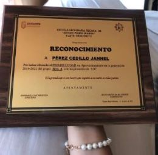
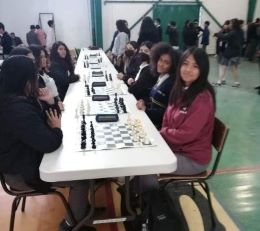
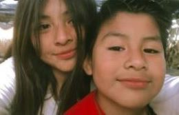
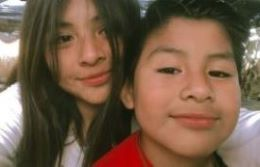
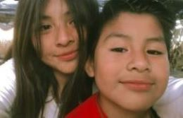

 
Aprendí a jugar ajedrez y fui a mi primer torneo de este
Me gradué de la secundaria con el mejor
promedio de la generación de mi grupo

Me gustaría practicar esgrima
.jpg) 

Mi nombre es Jannel Perez Cedillo, tengo 16,
Fui la primera hija de mis padres y nací el 16 de septiembre del 2007
en Tijuana B.C en donde también vivo actualmente pese a que mis padres son de Puebla.
Curso el 4to semestre de preparatoria en donde me va muy bien
Soy una persona algo tímida e insegura con cosas nuevas
Aunque suelo adaptarme rápido y soy muy feliz.
Mi infancia fue muy curiosa y divertida,
llena de varias anécdotas en su mayoría felices y chistosas
Fui a la guardería ya que mis papás trabajaban pero me gustaba ir.
A los 5 años ingresé al kinder en donde hice mis primero amigos y fui parte de la
escolta. Por esas fechas también tuve a mi primera mascota aunque esta no me
quería mucho que digamos por eso nunca la olvidaré.

A los 6 años entré a la primaria y empecé a aprender muchas cosas nuevas
Aunque me costó hacer amigos al principio cuando los tuve fueron muy buenas amistades.
Después empecé a participar en varios concursos/torneos, empecé a recibir reconocimiento,
y como eso me gustaba decidí que siempre me esforzaria mucho. Hasta entonces
lo he hecho, no ha sido fácil pero día con día lo intento para así llegar a cumplir todas mis metas y sueños.
| Mi comida favorita es el Teriyaki | Tengo dos hermanos | Me gusta jugar ajedrez | Me gusta viajar a Puebla por mi abuela | Soy una persona muy indecisa |
| Mi anime favorito es Naruto por ser el primero que vi | Mi cantante favorito es Wos | Tengo tres mascotas, 1 gata y dos perros | Mis animales favoritos son los perros y las mariposas | Pertenezco a la religión cristiana |
| Me gustan las matemáticas | No me gustan las películas de terror | Me gusta cocinar y comer | Mi mejor amigo se llama Lennin y lo ha sido desde la primaria | Mi hermano menor es una de las personas que más quiero en el mundo |
| He participado en varios concursos en la escuela | Mi color favorito es el morado | La mayoría del tiempo escucho música | Me gusta jugar Brawl Stars o videojuegos en general | Mis frutas favoritas son las uvas, fresas y la piña |
